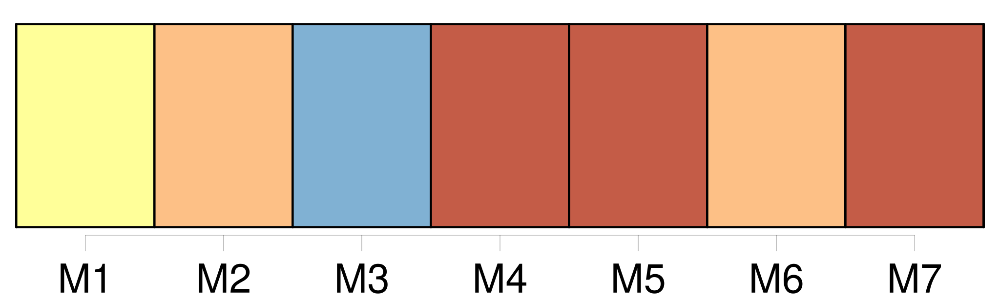
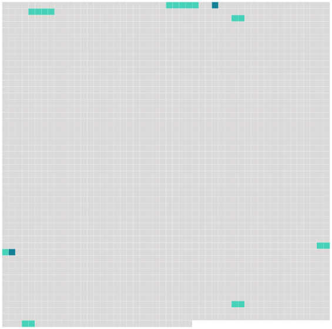

Longueur nb maillons : 8 mentions |
  |
Et, sans embrasser sa sœur ni tendre la main à son beau-frère, il me soulève de la banquette et m'emporte jusqu'à [la voiture longue et basse] , dans [laquelle] je passerai dorénavant toutes mes journées. En traversant le village, j'éprouve une grande honte à être vue dans [cette voiture d'infirme] [2 phrases]
Mes parents marchent de chaque côté de moi, et leur pas, et celui d'oncle meunier font à peine plus de bruit sur le gravier que les roues caoutchoutées de [ma voiture] [67 phrases]
Je le regrette vite, car dans ma hanche, le chien hargneux [14 phrases]
Le petit Jean les ramasse et les pose en travers de [ma voiture] , et comme pour encourager sa mère à la patience, il lui dit : [2 phrases]
Manine est sûrement de mon avis, car aussitôt qu'elle aperçoit la mère et l'enfant, elle pousse [ma voiture] sous le gros noyer qui ombrage une partie de la maison et elle apporte pour Mme Lapierre sa plus belle chaise de paille. |
 |
La ressource peut être téléchargée sur la page Ortolang
Si vous avez des questions ou vous voyez des erreurs, merci d'envoyer un mail à silvia.federzoni89@gmail.com
Site développé par S. Federzoni (contact)